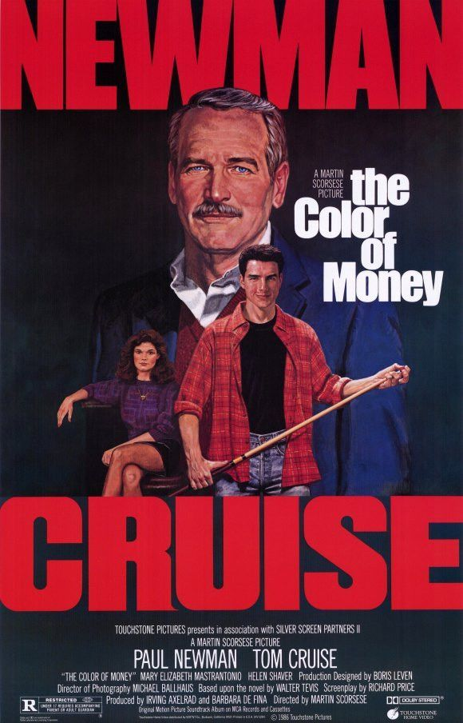
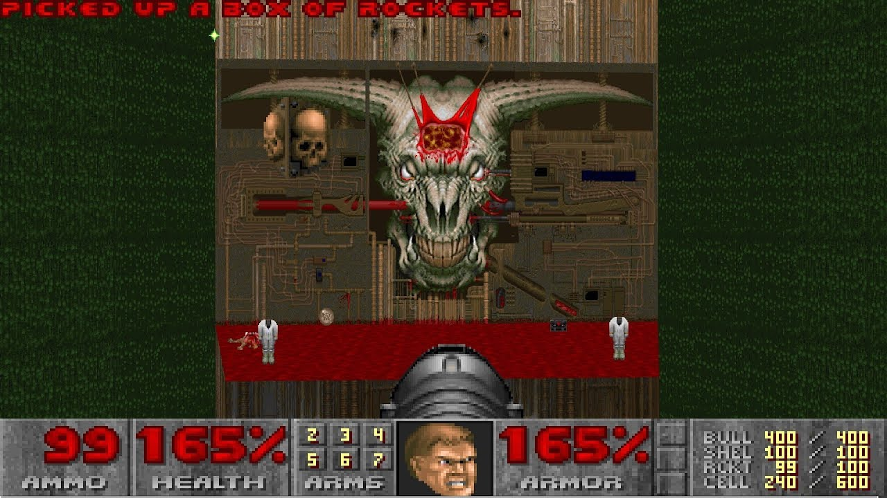
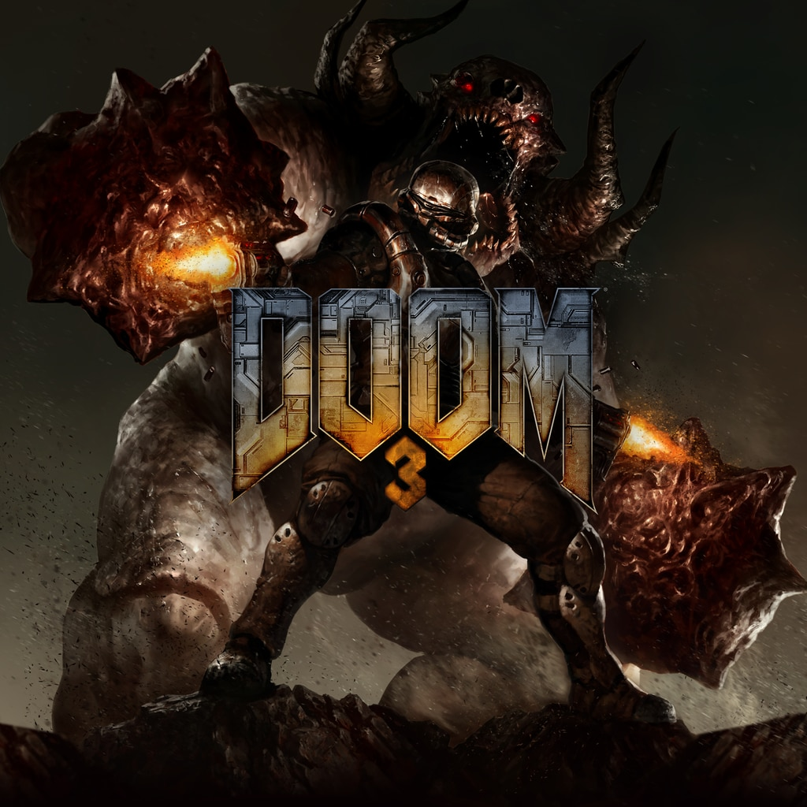
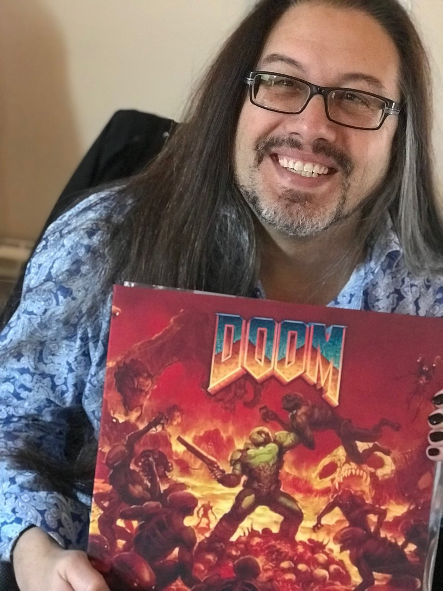
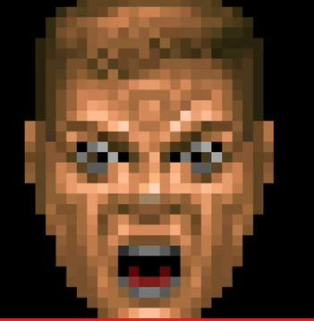
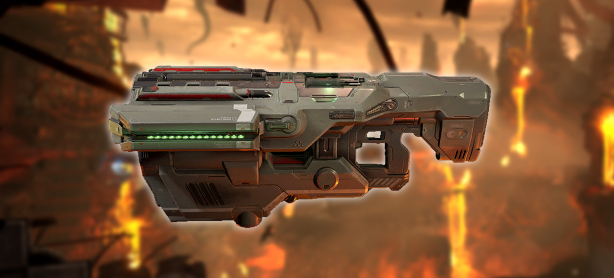
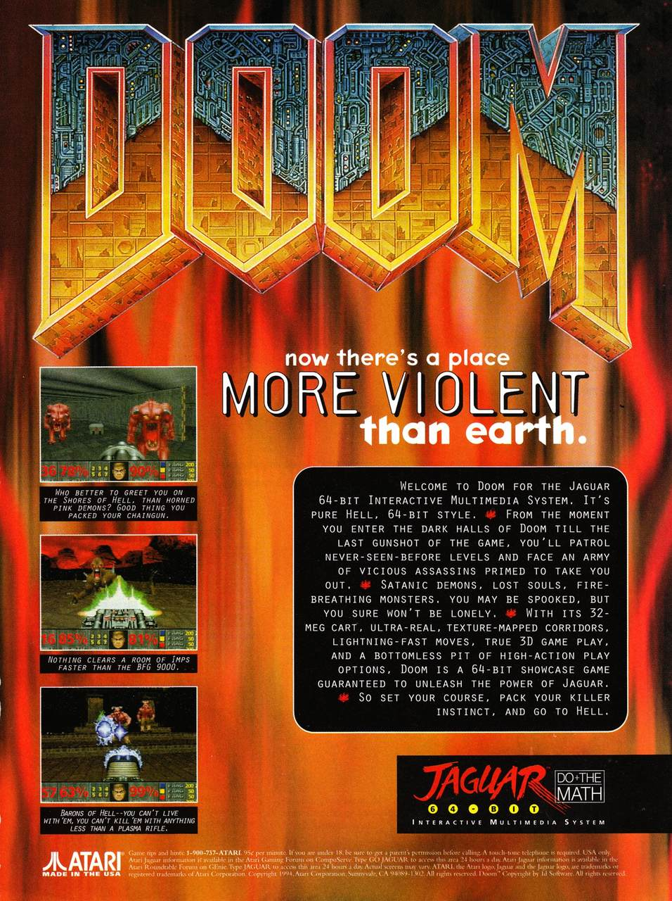

Eventualmente, o mundo dos games sofre uma grande revolução. Nos anos 90, mais precisamente nos computadores, Doom foi uma destas revoluções. Ditou tendência e ensinou para os games que viriam, como se faz um FPS de verdade. Por isso, vamos conhecer um pouco essa sequência recordista, que, ao todo, vendeu milhões de cópias pelo mundo, e representa toda uma geração de games de ação.
1– Começando pelo nome. “Doom” ganhou essa denominação em alusão a uma cena do filme A Cor do Dinheiro , de 1986, estrelado por Paul Newman e o então novato Tom Cruise;
A cena em questão, lembrada pela Bethesda, acontece no interior de um salão de bilhar. Um frequentador se aproxima do personagem de Tom Cruise com um certo ar de superioridade. Ele aponta o estojo aveludado que Cruise tem no colo, e pergunta: “Que que você tem aí?”
“Aqui?” pergunta Cruise, acariciando lentamente seu estojo antes de abri-lo para revelar um taco de sinuca bem decorado.
“Sorte.” A versão nacional dublada do filme trouxe “sorte” como resposta, mas no original, a resposta de Cruise é Doom, para depois, obter uma grande vitória no bilhar.Veja no video abaixo:
2 – E, em se tratando de cinema, motosserras e as armas super shotgun foram inspiradas no longa Evil Dead, ou a Morte do Demônio, no Brasil. É comum encontrar conversas em fóruns sobre Ash Williams ser um parente distante ou reencarnação de Doomguy. Sem contar que o diretor de Doom Eternal afirmou em entrevista que Doom Eternal é o “nosso Evil Dead 2”;
3 – O nível de dificuldade “Nightmare” foi adicionado após alguns comentários de feedback, afirmando que o game era “fácil demais”. O modo “Nightmare” é celebrado até hoje como um dos modos mais difíceis de um game em todos os tempos.
4 – Doom 3, considerado por alguns como o melhor, tem várias referências ao Doom clássico. Vários sprites do jogo original foram utilizados, em referências espalhadas. Confira todas elas aqui (link em espanhol);
5 – Tem monstro na área! Para saber se há alguma criatura por perto, é só atentar-se a um ruído. Se isso é comum hoje, com suportes de áudio e dispositivos cada vez mais modernos, imagine em 1993 a novidade que foi! Ah, para ter essa qualidade sonora, era preciso também contar com uma boa placa de som;
6 – John Romero, o criador e designer de Doom, criou o nível "Perfect Hatred", do Ultimate Doom, em apenas seis horas; Inclusive, há um site que cria nomes genéricos de níveis para Doom. Caso queira brincar de batizar fases do game, é só visitar o link
7 – Estou chocado! Existe uma expressão de rosto chocada na barra de status, no clássico Doom, mas que acabou não sendo utilizado;
Além disso, as expressões do Doomguy, que ajudava a ilustrar seu estado de vida, foi utilizado de formas diferentes nos ports que foram sendo lançados com o passar dos anos. No 3DO, por exemplo, o rosto explodia quando o jogador morria.
8 – Clássico com clássicos. A musica do primeiro jogo foram inspiradas em bandas como Pantera, AC/DC, Metallica e Alice in Chains. Veja um exemplo, quando Doom se inspirou por três vezes em músicas do Pantera:
9 – BIG FUCKING GUN. Esse é o significado da famosa arma conhecida pela sigla BFG;
10 – Que audácia! Doom foi lançado um dia após a primeira audiência no Senado dos EUA sobre jogos violentos. Aquela famosa audiência, que discutiu a violência nos games após as polêmicas de Mortal Kombat e Night Trap, teve sua primeira audiência iniciada em 7 de dezembro de 1993, terminando em 9 de dezembro. Doom chegou no dia 10 de dezembro daquele ano.
E aí, fã de Doom, gostou? Qual destas você conhecia e qual é nova para você? Vamos conversar sobre um dos games mais importantes de todos os tempos!